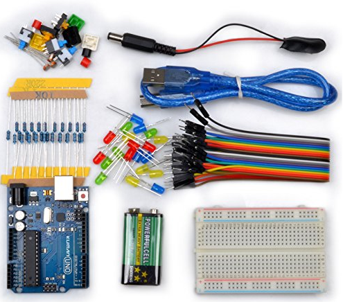
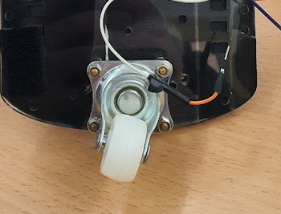
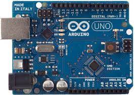
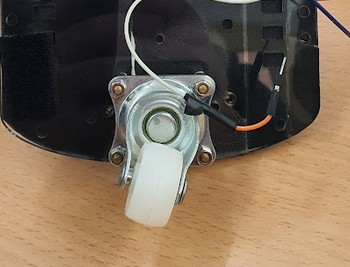
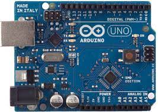
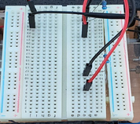

Proceso de montaje
¿CUALES SON LOS MATERIALES ?
Los materiales que vamos a utilizar son los siguientes, los que os dejamos a continuación en las imágenes más abajo, que básicamente vendrían siendo un controlador de motores, un bluetooth HC-06, sensores y resistencias, cables etc.
 



Proceso
Material
materiales Estas son las herramientas que son necesarias para crear una base estable del robot.

Motor
Empezamos a juntar las partes del motor para que el robot vaya pueda hacer que giren las ruedas.
Ruedas
Tenemos dos ruedas que van junto el motor que giraran con bateria de 9 voltios, tambien tenemos una rueda loca.
Goma eva
Hemos puesto goma eva en la superficie del base para que no se rallen las partes del controlador de motor y la placa .
Protoboard
Aqui como podeis ver, ya tenemos el protoboard colocado en la base y le hemos empezado a conectar a las ruedas y a partes del arduino, Tambien hemos conectado los sensores al protoboard.
porta pilas
Ya empezamos a poner por la parte trasera de la base el portapilas que será para que llegue electricidad al arduino.
Rueda loca
Nosotros hemos puesto una rueda loca en el robot sigue lineas
Controlador de motores
Un driver de motores, tal y como se puede ver en el diagrama de bloques de arriba, tendrá una serie de cables que van al Arduino (líneas de control), una entrada de energía conectada a una fuente como una batería o similar (línea de potencia) y las líneas que van finalmente a los motores.
Arduino
En el arduino le meteremos un script que estará hecho por nosotros y esos son los pasos que seguirá nuestro robot, no puede haber fallo en el script ya que si no , no hará lo que le habíamos programado.
Cableado
El cableado es muy importante hacerlo bien, ya que si no el robot no funcionará.